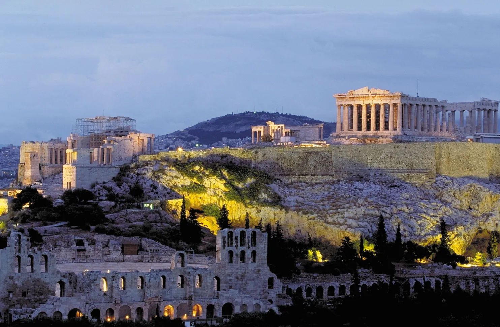
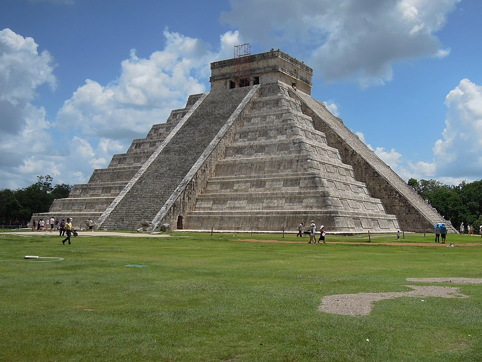

Homepage
Places & People
Data
Quiz
Athens – trivia quiz
Quiz
Question 1
. Where does Athens place in terms of population size, compared to other cities in the European Union?
Select an answer
1st-2nd
3rd-6th
7th-10th
11th-15th
16th-20th
Question 2
. What is the correct name for the temple dedicated to the goddess Athena?
Pantheon
Parthenon
Both names are correct and interchangeable.
Question 3
. What is the name of the hill which hosts, among other things, the temple just mentioned?
Question 4
. Select pictures showing iconic landmarks or scenery of Athens.


Question 5
. Every how many years are the Olympic Games held, which started in their modern form in 1896 in Athens?
Question 6
. Which form of government is Athens said to be the cradle of?
Aristocracy
Oligarchy
Tyranny
Democracy
Question 7
. What is the name of the central square located in the heart of Athens, just next to the Greek Parliament?